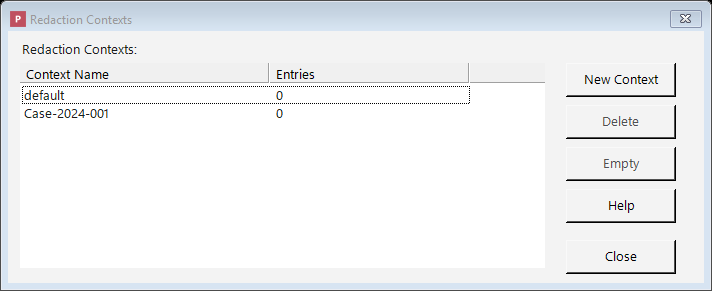

Contexts
A context keeps your replacements consistent across a set of related documents.
Consider redacting fifty documents in a single matter where you've chosen to replace real names with realistic stand-in names. Without a context, "Jane Doe" might become "Mary Smith" in one document, "Susan Jones" in the next, and "Linda Brown" in a third, because each replacement is generated separately. The documents would no longer line up, making it impossible to follow who's who.
A context fixes this by acting as a shared memory: when you redact all fifty documents under the same context, "Jane Doe" becomes the same stand-in name in every document. The set stays internally consistent, relationships between people are preserved, and the redacted documents remain usable as a group.
A ready-made context named default is created automatically. You can create additional contexts and choose which one to use when you add documents to the queue: for example, one context per case or per matter, so each matter's documents stay consistent within themselves but don't get mixed up with another matter's.
When would I use contexts?
Contexts matter most when you replace sensitive information with realistic stand-in values (rather than blacking it out) and you are redacting more than one related document. Common situations:
- A set of documents in one case or matter. Use a single context for all of them so the same person, account, or identifier is replaced with the same stand-in everywhere.
- Documents that reference each other. When an email thread, a contract, and its exhibits all mention the same parties, a shared context keeps those references pointing to the same stand-in values, so relationships between people remain clear after redaction.
- Keeping separate matters apart. Use a different context for each case or client so one matter's replacements never mix with another's.
- Starting fresh. To reuse a context without its remembered replacements, use Empty to clear the memory while keeping the context.
If you are blacking out information (the Redact strategy) or redacting a single document, consistency across documents doesn't apply, so the default context is all you need.
Managing your contexts
Open the Contexts window from the main toolbar. From there you can:

The Contexts window: create per-case or per-matter contexts so related documents stay consistent.
- New Context: create a new context (for instance, one for a new case).
- Delete: remove a context you no longer need. Its remembered replacements are deleted along with it.
- Empty: clear the remembered replacements for a context without deleting the context itself, to start the consistency "memory" fresh while keeping the context.
Where the consistency memory is stored
A context's remembered replacements are saved durably in Philter Desktop's encrypted local database, not just held in memory while the app is running. This means a context stays consistent across application restarts: if you redact some documents today and more under the same context next week, the same original still becomes the same stand-in value. The same stored memory is shared by every redaction path — the queue, watched folders, and the command line — so they all stay consistent with one another.
Because the memory is durable, it does not expire or get evicted on its own and there is no size limit to configure. It grows as you redact more unique values; use Empty to clear a context's memory, or Delete to remove the context and its memory entirely. The database is encrypted at rest, so the stored originals and their stand-in values are protected like the rest of your data.
How contexts come into play
- When you add documents using the Redact button, you choose which context to use for them.
- Documents added by drag-and-drop use the default context.
- Whether replacements are shared from one document to the next depends on the filter strategy. Specifically, random replacement set to reuse values within a context is what makes the same original turn into the same stand-in everywhere. (When blacking information out, consistency isn't a concern: every redaction becomes the same placeholder anyway.)